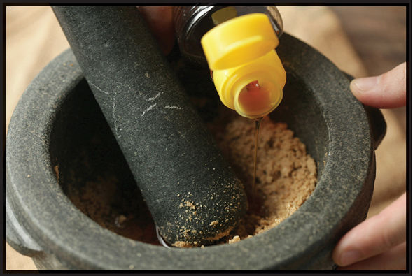
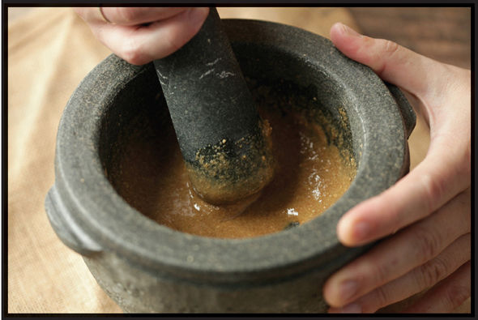

HOMEMADE SESAME PASTE
|
Yield Serves 4 |
Active Time 15 minutes Total Time 30 minutes |
INGREDIENTS
1 cup (about 4 ounces/120 g) sesame seeds
2 to 4 tablespoons (30 to 60 ml) roasted sesame oil
DIRECTIONS
1 Heat the sesame seeds in a dry wok over medium-low heat and cook, stirring constantly, until the seeds are golden brown and give off a pleasant nutty aroma, about 8 minutes. Transfer the roasted sesame seeds to a bowl to cool.
2 To Finish in a Food Processor: When cool, transfer the sesame seeds to the bowl of a food processor. Add 2 tablespoons (30 ml) oil and process until the sesame seeds start to form a thick paste. With the machine running, drizzle in additional sesame oil until a smooth paste is formed that gently settles when you stop the machine (with some sesame seeds, you may need additional sesame oil to get to the right consistency). Transfer to a sealed container and store in the refrigerator for up to several months. Stir before using.
To Finish in a Mortar and Pestle: When cool, transfer the sesame seeds to a large mortar. Grind with the pestle using a circular motion until the seeds form a thick paste that starts to clump together. Scrape down the sides of the mortar and pestle with a spoon. Add 2 tablespoons (30 ml) of the sesame oil and continue grinding with a circular motion until the sesame paste is relatively smooth. Drizzle in additional sesame oil until the paste is thin enough to slowly settle when you lift the pestle out of it. Transfer to a sealed container and store in the refrigerator for up to several months. Stir before using.

